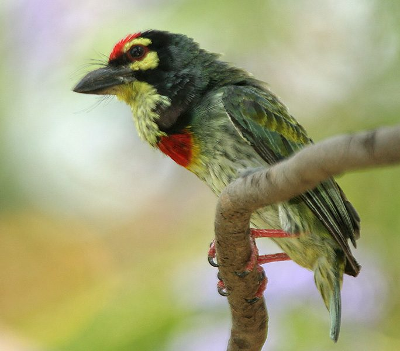

छोटा बसंताCoppersmith Barbet
Psilopogon haemacephalus · Capitonidae · BRD-0088

- Scientific name
- Psilopogon haemacephalus (Müller, 1776)
- Family
- Capitonidae
- Hindi
- छोटा बसंता / टम्बट
- Local names
- chhota basanta, basanta, bansanta, tambat, tamera
- Status here
- native
- IUCN
- LC
- Review
- audited and independently read
When to look कब देखें
Present all year.
Uses and possibilities उपयोग और संभावनाएँ
Drawn from the documented uses in the profile below, where each is labelled traditional, current or a research lead. All uses →
छोटा बसंता / Coppersmith Barbet
Psilopogon haemacephalus (Müller, 1776) — Capitonidae
छोटा बसंता — आम के पेड़ों पर बैठी एक रंगीन चिड़िया जिसका सिर लाल है और शरीर हरा है। इसकी आवाज़ "टूप-टूप-टूप" गाँव की सुबह का संगीत है। घोंसला बनाने के लिए इसे पेड़ की गहरी सुरंग की ज़रूरत होती है।
Quick Identification त्वरित पहचान
| Feature | Description |
|---|---|
| Size | Small, stocky woodpecker-relative (16–19 cm total length); heavy-headed |
| Head | Crimson-red or maroon (most of crown and face) — very distinctive |
| Throat and breast | Yellow with red spots on throat; red continues down breast |
| Upperparts | Olive-green back and wing coverts |
| Underparts | Olive-green with yellow and red markings |
| Bill | Thick, pale, chisel-like (adapted for pecking) |
| Eyes | Dark with pale orbital ring |
| Tail | Short, olive-green |
Field tip: A small, stubby, bright green bird with a red head — immediately recognizable. Listen for the persistent "tuk-tuk-tuk" or "top-top-top" call, especially in early morning. Often seen in fruit-bearing trees.
Morphology आकारिकी
Biometrics (nominate subspecies haemacephalus, northern India — the form in eastern UP):
| Measurement | Range |
|---|---|
| Total length | 160–190 mm |
| Wing (flattened chord) | 95–105 mm |
| Tail | 45–55 mm |
| Tarsus | 13–15 mm |
| Bill (culmen from base) | 17–20 mm |
| Weight | 32–48 g |
Plumage: Head and face bright crimson-red or maroon — extends from crown to lores and below eye, with red on upper and lower breast. Throat yellow with red spots forming streaks. Back, wing coverts and rump olive-green. Underparts yellowish-green. Tail olive-green. Flight feathers dark grey-green.
Bill: Pale, thick and chisel-shaped, adapted for excavating nest holes.
Sexes: Similar; some males may have slightly more extensive red on breast.
Juveniles: Duller; red replaced by orange-red; fewer spots on throat.
Vocalisations
Coppersmith Barbet has one of the most distinctive and repetitive calls among Indian birds.
- Calling song: A loud, repetitive "tuk-tuk-tuk-tuk" or "top-top-top-top-top", like a hammer on metal (hence "coppersmith"). Continues for long bouts, especially at dawn and dusk and throughout the day in breeding season.
- Duetting: Pairs often call together in alternating bursts, creating a duetting effect.
- Alarm call: Similar to song but shorter bursts.
Behaviour & Ecology व्यवहार और पारिस्थितिकी
Hole excavator: Unlike most barbets, Coppersmith Barbets excavate their own nest holes in soft wood (dead branches, rotten tree trunks). They peck away at the wood to create a chamber, leaving a circular entrance.
Frugivore and insectivore: Primary diet is fruit, especially fig (genus Ficus), but also consumes insects, berries, and leaf buds. Less frugivorous than some other barbets.
Sedentary: Pairs or small groups are highly territorial and stay in the same area year-round. Males are particularly vocal in defending territories.
Social structure: Usually seen singly or in pairs; sometimes small family groups after breeding.
Life Cycle / Phenology जीवन चक्र
- February–March: Territory establishment; calling most intense
- March–May: Pair bonds form; nest hole excavation in dead branches
- April–June: Eggs laid (usually 2 or 3); incubation ~14 days
- May–July: Chicks fledge; males may start second clutch
- August–October: Post-breeding; calling decreases but remains audible
- November–January: Quieter period; less activity; pairs still present
Host Plants or Prey आहार
Primary diet:
- Figs (Ficus spp., especially F. religiosa Peepal, F. benghalensis Banyan)
- Berries of various shrubs and herbs
- Leaf buds in non-fruiting season
- Insects: chiefly ants and small beetles
- Small caterpillars
Predators / Natural Enemies शत्रु
- Shikra (Accipiter badius) — preys on adults and fledglings
- Indian Roller (Coracias benghalensis) — hunts flying birds
- Feral cats — wait near nest holes for young
- Wasps and ants — infest nest holes
Agricultural / Human Relevance कृषि प्रासंगिकता
Fruit orchard value: Coppersmith Barbet consumes significant quantities of insects and helps control leaf-eating caterpillars and bark beetles. Moderate damage to ripening fruit through feeding; however, the benefit of insect control is probably greater.
Seed dispersal: Fig seeds pass through digestive tract and are dispersed; contributes to fig tree regeneration.
Cultural presence: The loud "tuk-tuk-tuk" call is a beloved and iconic sound of Indian villages and orchards. The call is mentioned in Hindi literature and folk songs; often associated with the advent of spring.
Protected status: Schedule IV of Wildlife (Protection) Act, 1972. Nest excavation and disturbance are illegal. Historically, some communities kept the bird in cages for its call, but this is now prohibited.
Expected Locally स्थानीय रूप से अपेक्षित
Not a field record. Written from published accounts for eastern Uttar Pradesh. No confirmed local sighting yet — if you have seen it, that is what the atlas needs.
अभी तक स्थानीय पुष्टि नहीं। यह विवरण प्रकाशित स्रोतों से है, किसी अवलोकन से नहीं।
Coppersmith Barbet is expected in Basti and Ayodhya districts wherever fig-bearing trees and other fruiting trees remain. Most common in orchards, village gardens, and forest fringes. Listen for the persistent "tuk-tuk-tuk" call in early morning and late afternoon from March to July; quieter but still present in other months.
Distribution वितरण
Global range: Indian subcontinent — widespread from Afghanistan and Pakistan through India (except the highest Himalayas and the far Northeast) and Bangladesh.
In India: Common resident throughout India from the plains up to about 2,000 m in the Himalayas.
In Uttar Pradesh: Widely distributed in areas with adequate fruit-bearing trees.
In Basti district / eastern UP: Expected in villages with orchards and fig trees; populations concentrated near suitable habitat.
Research Questions शोध प्रश्न
- How long does a Coppersmith Barbet call each day? / दिन में कितनी देर "टूप-टूप-टूप" करती है? — No equipment needed; time the calling from sunrise.
- Where do they excavate nest holes in your village? / छेद कहाँ बनाती है? — Map all active and old nest holes; note tree species used.
- What fruits do they prefer in each season? / किस मौसम में क्या फल खाती है? — Watch feeding birds; record what they eat and when.
- Do pairs stay together year-round? / क्या साल भर एक साथ रहती है? — Track a pair month by month; note if they stay in the same area.
- How do they use dead branches for nesting? / कैसे मरी हुई शाख में घोंसला बनाती है? — Examine excavated holes; measure hole diameter and depth.
Similar Species मिलती-जुलती प्रजातियाँ
| Species | How to tell apart | हिंदी |
|---|---|---|
| Brown-headed Barbet (Psilopogon zeylanicus) | Large (28 cm); brown head (not red); larger and less common | बड़ा बसंता — भूरा सिर |
| Crested Barbet (Megalaima bristolensis) | Large (32 cm); green with black crest; different call | मुकुट बसंता — बहुत बड़ा |
| Green Bee-eater (Merops orientalis) | Slender, green; yellow throat; long tail; hunts in flight | हरी मधु शिकारी — लंबी पूँछ |
Field rule: Small stocky green bird with bright red head and red breast + repetitive "tuk-tuk-tuk" call = Coppersmith Barbet. The red head is diagnostic.
Taxonomy & Classification वर्गीकरण
Original description. Psilopogon haemacephalus was described by Müller in 1776 as Bucco haemacephalus, based on specimens from India. The genus Psilopogon was erected later and includes the smallest barbets.
Subspecies. Two subspecies recognised; haemacephalus is the nominate form occurring across India including UP.
Family and order placement. Order Piciformes (woodpeckers, barbets, honeyguides); family Capitonidae (Old World barbets). Barbets are hole-nesting, primarily frugivorous birds related to woodpeckers.
Phylogenetic notes. Molecular studies place the genus Psilopogon within a clade of small Asian and African barbets.
IUCN status rationale. Assessed as Least Concern. The species is widespread, common in suitable habitat, and has adapted well to village environments.
Photo Gallery फोटो गैलरी
Note: Add field photos tomedia/species/coppersmith_barbet/
फोटो निर्देश: पास से (लाल सिर और लाल सीना दिखाते हुए), अंजीर के पेड़ पर, घोंसले के छेद पर (गहरी सुरंग), और जोड़े में साथ।
Photos needed आवश्यक फोटो
- [ ] Close-up showing red head and breast (लाल सिर + सीना)
- [ ] In fig tree feeding (अंजीर के पेड़ पर)
- [ ] At nest hole (घोंसले के छेद पर)
- [ ] Perched on branch (शाख पर)
- [ ] Pair together (जोड़ा)
References संदर्भ
- Müller, P.L.S. (1776). Syst. Nat. Suppl.. Halle, p. 40. [original description]
- Ali, S. & Ripley, S.D. (1987). Handbook of the Birds of India and Pakistan. Vol. 6. Oxford University Press, New Delhi.
- Grimmett, R., Inskipp, C. & Inskipp, T. (2011). Birds of the Indian Subcontinent. 2nd ed. Christopher Helm, London.
- Rasmussen, P.C. & Anderton, J.C. (2005). Birds of South Asia: The Ripley Guide. Smithsonian Institution, Washington.
- Winkler, H. & Christie, D.A. (2002). Family Capitonidae (Barbets). In: Handbook of the Birds of the World Vol. 7 (pp. 140–219). Lynx Edicions, Barcelona.
- BirdLife International (2024). Psilopogon haemacephalus. IUCN Red List of Threatened Species. Ver. 2024.
- GBIF Occurrence Data — Psilopogon haemacephalus, Uttar Pradesh (2010–2025).
Source file: species/fauna/birds/coppersmith_barbet.md